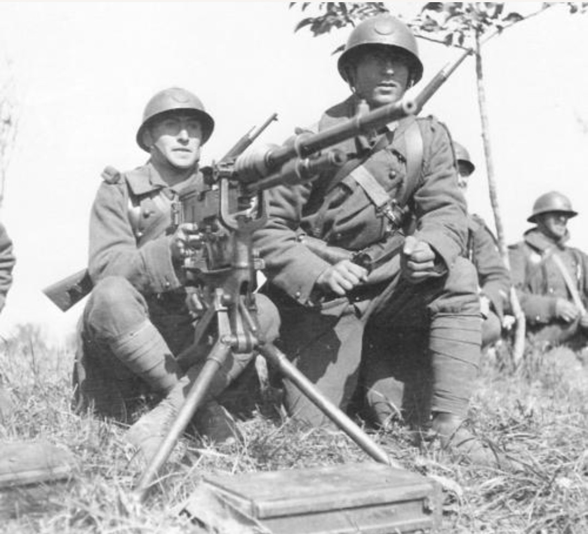

L’infanterie motorisée française de 1939 est une évolution de l’infanterie classique. Elle bénéficie d’une mobilité accrue grâce aux camions de transport, permettant des déplacements rapides entre les secteurs et une meilleure réactivité sur le front.
Ces unités sont souvent engagées pour renforcer un point menacé ou exploiter une percée.
L’armement est identique à celui de l’infanterie classique, mais la motorisation permet d’emporter davantage de munitions et parfois des armes de soutien supplémentaires.
L’infanterie motorisée se déplace principalement en camions, ce qui lui permet d’être engagée rapidement sur différents points du front. Elle sert souvent de réserve mobile, capable de renforcer une position ou de combler une brèche.
Cette mobilité en fait une unité essentielle dans les premières phases de la campagne de 1940.